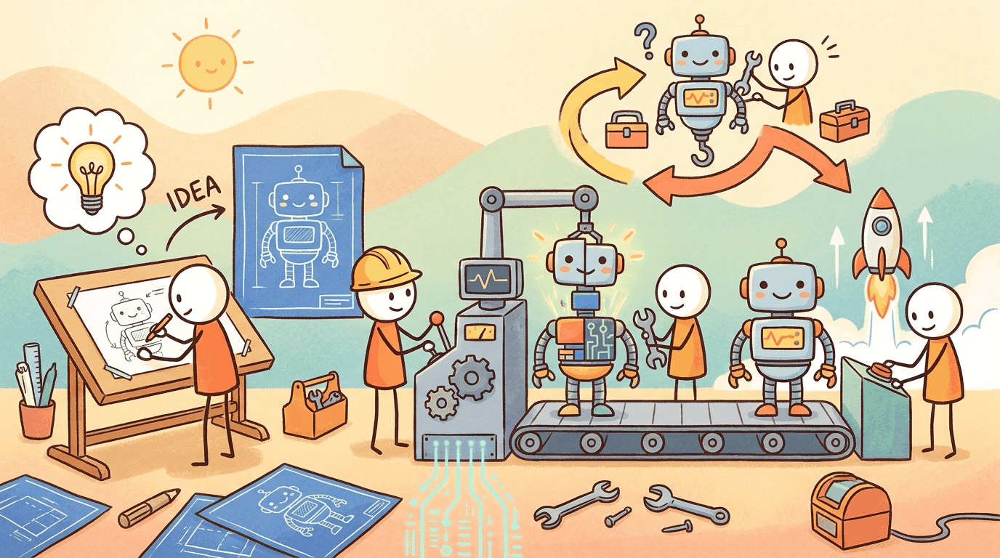

capturing the theme: The entrepreneur's operating model for building, launching, and iterating on AI-centere..."Vision without execution is hallucination."
Thomas Edison
Part Overview
Part XI bridges the gap between knowing how LLMs work and shipping a product that uses them. Where earlier Parts taught you to build RAG pipelines, fine-tune models, and orchestrate agents, this Part shows you how to run the rapid, evidence-driven iteration cycles that turn a promising prototype into a reliable, economically viable product. It is designed for founders, product managers, and engineers who need an operating model, not just technical skills.
Two chapters cover the full journey: framing the product hypothesis, assessing feasibility, and building with the observe-steer loop (Chapter 45), then shipping with sound economics, provider portability, and post-launch monitoring (Chapter 48). A capstone lab ties everything together.
AI product development is fundamentally different from deterministic software development. Outputs are probabilistic, quality requires measurement across distributions, and "shipping" means establishing a quality gate with continuous monitoring. This Part gives you the operating model to navigate these differences: from framing your AI hypothesis, through responsible prototyping with AI coding tools, to launch readiness with real unit economics and provider portability.
Framing the AI product hypothesis: what makes AI products different, choosing the model's role, assessing feasibility across technical and regulatory dimensions, and studying real-world role assignment case studies.
The build phase: observe-steer development loops, the founder's prototype loop, documentation as a control surface, AI coding assistants with verification discipline, and crossing the prototype-to-MVP bridge.
What Comes Next
With the product-building operating model in hand (hypothesis, build, ship), you have completed the book's journey from foundations to frontiers to product. Explore the Appendices for reference material, or revisit the Build AI Products pathway to review your learning trajectory.